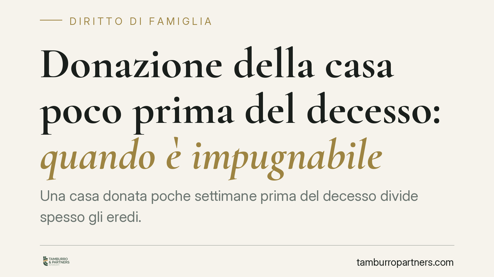

Donazione della casa poco prima del decesso: quando è impugnabile
Una casa donata poche settimane prima del decesso divide spesso gli eredi. La donazione resta valida, ma può essere annullata se il donante era incapace di intendere e di volere, o ridotta se lede la quota di legittima. Sapere quali strumenti offre la legge e in quali tempi agire fa la differenza tra un diritto tutelato e uno perduto.

Il caso tipico
Un genitore, negli ultimi mesi di vita, dona la casa a uno solo dei figli. Alla sua morte gli altri eredi scoprono l'atto e si chiedono se sia possibile contestarlo. La domanda è ricorrente e la risposta non è unica: dipende dalle condizioni in cui la donazione è avvenuta e dalla posizione di chi la impugna.
Due sono i profili da distinguere: la validità dell'atto (il donante era lucido?) e il rispetto delle quote ereditarie (la donazione ha danneggiato gli eredi legittimari?). Sono piani autonomi, con presupposti e termini diversi.
Inquadramento normativo
Sul primo profilo interviene l'art. 775 del Codice civile, che disciplina la donazione del soggetto incapace di intendere e di volere. La norma consente di annullare la donazione fatta da chi, pur non essendo interdetto, al momento dell'atto era privo della capacità di comprenderne il significato e le conseguenze. L'azione di annullamento può essere proposta entro cinque anni dal giorno in cui la donazione è stata compiuta.
Qui il concetto di incapacità è più ampio rispetto ad altri istituti: non serve una malattia mentale permanente. È sufficiente dimostrare che, in quello specifico momento, il donante non era in grado di autodeterminarsi, per esempio a causa di una patologia in stadio avanzato, di terapie farmacologiche pesanti o di uno stato di grave decadimento cognitivo. La giurisprudenza – Cassazione Civile Sez. 2 e diversi tribunali di merito, tra cui Locri, Mantova e Potenza – ha valorizzato prove come cartelle cliniche, certificazioni mediche e testimonianze sullo stato del donante prossimo alla data dell'atto.
Il secondo profilo riguarda la tutela della legittima, cioè la quota di eredità che la legge riserva ai familiari più stretti: coniuge, figli e, in loro assenza, ascendenti. Se le donazioni compiute in vita riducono questa quota sotto il minimo di legge, gli eredi lesi possono agire con l'azione di riduzione per recuperare quanto spettante. Questa azione non presuppone alcuna incapacità del donante: colpisce anche la donazione fatta da persona pienamente lucida.
Cosa cambia per gli eredi
Chi vuole contestare deve prima capire su quale binario muoversi.
Se si sostiene che il genitore non fosse lucido, la strada è l'annullamento ex art. 775 c.c. Il risultato, in caso di successo, è la caducazione integrale della donazione: il bene rientra nell'asse ereditario e si divide secondo le regole successorie.
Se invece la donazione è valida ma ha eroso la quota riservata per legge, la strada è l'azione di riduzione. Qui non si annulla nulla: si ottiene la reintegrazione della legittima, spesso con la restituzione del bene o del suo valore nella misura necessaria a ricostituire la quota.
È possibile agire in via subordinata: chiedere l'annullamento e, ove non accolto, la riduzione. La scelta della domanda e delle prove va calibrata sin dall'inizio, perché incide sull'onere probatorio e sui tempi.
Attenzione ai termini. L'azione di annullamento ha un termine di cinque anni. L'azione di riduzione ha tempi più lunghi, ma decorrono dall'apertura della successione. Lasciare passare il tempo può precludere il rimedio.
Cosa fare in concreto
- Recuperate subito la documentazione medica del donante relativa ai mesi precedenti la donazione: cartelle cliniche, referti, prescrizioni farmacologiche.
- Individuate testimoni in grado di riferire sullo stato di lucidità del donante al momento dell'atto (medici, personale di assistenza, conoscenti).
- Verificate l'atto notarile di donazione: data, presenza del notaio, eventuali dichiarazioni sullo stato del donante.
- Ricostruite l'asse ereditario e le altre donazioni compiute in vita, per capire se e quanto la legittima sia stata lesa.
- Consultate un legale prima che maturino i termini: la scelta tra annullamento e riduzione va decisa in base alle prove disponibili.
Un'avvertenza
Non ogni donazione fatta in età avanzata o in malattia è annullabile. La prossimità temporale al decesso è un indizio, non una prova. Occorre dimostrare in modo puntuale l'assenza di capacità nel momento specifico dell'atto. Consigliamo di non muovere contestazioni generiche: senza un solido supporto probatorio l'azione rischia di essere respinta, con addebito delle spese.
Contributo informativo a cura di Tamburro & Partners - Avv. Giuseppe Tamburro. Non costituisce parere legale.
Ogni famiglia ha il suo equilibrio.
Separazione, divorzio, affidamento, assegno: se vuoi un confronto riservato su una specifica situazione, scrivi allo studio. Ti rispondiamo entro un giorno lavorativo.